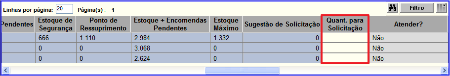

Alerta de Reposição - Central [ Voltar ] Utilize esta
tela para consultar a posição de estoque atual dos produtos na rede.
O formulário "Alerta de Reposição - Central"
encontra-se dentro do menu "Programação - Planejamento".
Ao clicar no formulário, o sistema exibirá a seguinte
tela:
Para consultar o planejamento de estoque, siga os passos abaixo:
1° Passo: configure os filtros da pesquisa. Utilize os filtros para facilitar a localização dos planejamentos desejados. Eles serão mostrados na grade, conforme imagem abaixo.
A tabela de resultado desta tela exibe as seguintes informações:
- Código. Código do produto no sistema;
- Descrição. Descrição completa do produto;
- UN. Unidade de medida cadastrada para o produto;
- Grupo. Grupo de produtos ao qual o produto pertence;
- Padronizado. Aqui é indicado se o produto é padronizado ou não;
- IC (Índice de Criticidade). Classificação do produto conforme seu grau de criticidade em relação a sua importância e substituibilidade;
- CV (Curva de Valor ABC). Os produtos do estoque são separados em três categorias em função do
valor total e da representação em relação ao valor total do estoque. Os
produtos classificados com A possuem os maiores valores de estoque, enquanto os produtos B possuem valores intermediários e os produtos C são classificados como de baixo custo;
- Nível de Atenção. Aqui é informado a necessidade de atenção que o produto deve receber;
- Preço Última Compra. Aqui é informado o valor do produto na última compra;
- MOV (TRF) (Movimentações de Transferência). Indica todas as movimentações de transferência realizadas no local onde o usuário se encontra;
- CMM (Rede) (Consumo Médio Mensal). Trata-se do consumo do produto mensalmente na rede;
- Estoque Central. Aqui é informado a quantidade disponível do produto por meio dos locais centrais;
- Estoque NUMAB. Aqui é informado a quantidade disponível do produto no estoque da NUMAB;
- Estoque GEMEX. Aqui é informado a quantidade disponível do produto no estoque da GEMEX;
- Estoque Rede. Aqui é informado a quantidade disponível do produto em toda a rede;
- Cobertura de Estoque - Centrais. Tempo (em dias) em que o estoque médio será suficiente para suprir a demanda média do produto nas centrais;
- Cobertura de Estoque - Rede. Tempo (em dias) em que o estoque médio será suficiente para suprir a demanda média do produto em toda a rede;
- Encomendas Pendentes. Ordens de compra já processadas cujo recebimento está pendente;
- Estoque de Segurança. Corresponde à quantidade mínima desejável em
estoque para este produto, com fins de prevenção a incertezas
de fornecimento edemanda;
- Ponto de Ressuprimento. Quantidade do produto no estoque que indica a necessidade de realizar novas aquisições. O cálculo deriva da
soma: Estoque de Segurança + (Demanda Mensal do Produto x Tempo de
Ressuprimento);
- Estoque + Encomendas Pendentes. Quantidade de produto no estoque local + a quantidade de produtos que faltam recebimento;
- Estoque Máximo. Consiste na maior quantidade admissível em estoque;
- Sugestão p/ Solicitação. Cálculo de reposição sugerido pelo sistema. O cálculo principal da
sugestão consiste em: Estoque Máximo - Estoque Virtual + Estoque de
Segurança. Porém, este cálculo pode ser sobreposto ao cálculo de
parâmetros de reposição para o Local e para o Produto. A hierarquia de
sugestão é: Produto > Local > Rede;
- Quant. para Solicitação. Informe neste campo a quantidade desejada para realizar uma solicitação de aquisição;
- Atender?. Neste campo é informado se será ou não atendido o pedido de aquisição;
- Ata. Aqui são listadas todas as atas referentes ao produto;
- Saldo na Ata. Quantidade máxima do produto permitida por ata;
- Vigência das Atas. Período de tempo em que a ata é válida;
- Nº PAM. Número dos Pedidos de Aquisição de Materiais referentes ao produto;
- Nº Processo SICOP. Número do Processo relacionado ao PAM;
- Nº AFM. Número da Autorização de Fornecimento de Materiais;
- Nº Empenho. Número do Empenho referente a AFM;
- Data de Entrega dos Empenhos. Data acordada de entrega dos emprenhos;
- Fornecedor. Aqui são listados os possíveis fornecedores do produto;
- Detentor Atual do Processo SICOP. Preenchido via integração com o SICOP;
- Observações GEAB. Adicione aqui quaisquer informações adicionais sobre a Gerência de Abastecimento;
- Observações Programação. Adicione aqui quaisquer informações adicionais sobre a programação.
Observação: Na
seção "Legenda" na parte inferior da tela, o usuário tem uma legenda de
cores para interpretação dos resultados da pesquisa. Ainda, para listar
exclusivamente produtos em determinada situação de estoque, clique na
legenda desejada.
2º Passo: informe a quantidade do produto para realizar uma solicitação de aquisição. Definida a quantidade no campo Quant. para Solicitação, conforme imagem abaixo, logo após clique no botão  [Processar], você será redirecionado para a tela de solicitação correspondente. 
3º Passo (Opcional): clique na descrição do produto. Você
será redirecionado para a tela "Consulta de Estoque por Produto", esta
tela permite ao usuário pesquisar a quantidade de itens do produto no
estoque.
|